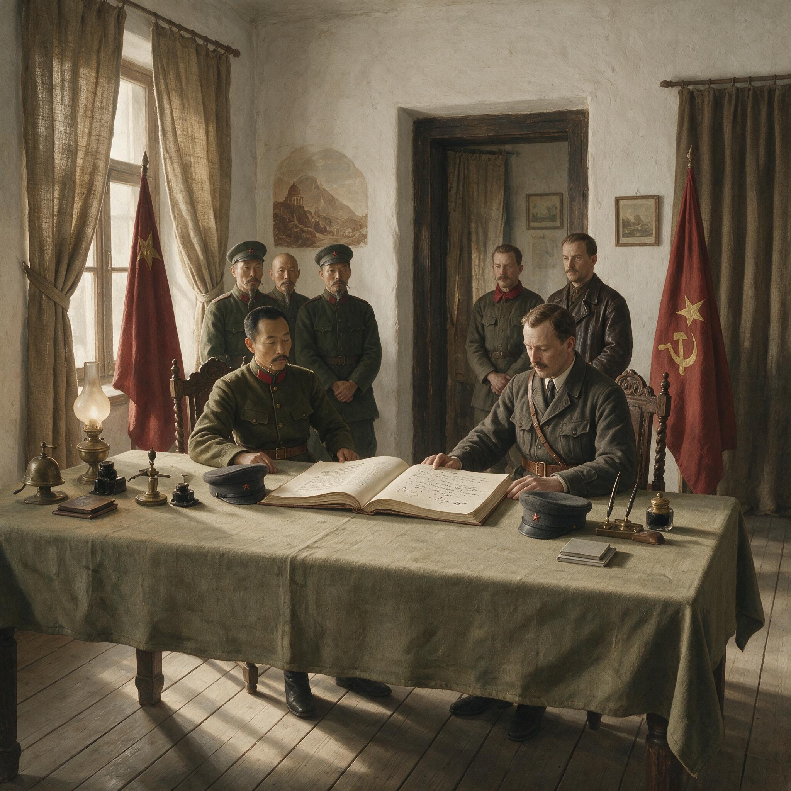

第 12 章
红军入蒙与新政权
时间须倒回至1915年——红军入蒙的历史前提，要从沙俄崩塌后蒙古内部的权力真空说起。条约序言使用了一个说法：“蒙古人民的自决权”。这个说法没有出现在1915年恰克图的文件里。当时使用的词是“宗主权”“自治”“领土完整”。从一套词汇到另一套词汇的转移，本身就是一个政治事件。
《苏蒙修好条约》于1921年11月5日在莫斯科签署。文本的签名栏只列有两个主体：俄罗斯苏维埃联邦社会主义共和国政府，与蒙古人民政府。前者派出全权代表，后者的代表名字写在相同的纸面上。没有给中华民国政府的代表留下签署位置。
它的主要条款并不复杂：苏维埃俄国承认“蒙古人民政府为蒙古的唯一合法政府”，双方互派外交代表。序言为这一确认提供了理论根据。它援引的是蒙古人民的自决权，以及苏维埃俄国对一切被压迫民族的解放政策。同日的秘密附件则规定，苏俄有权在外蒙境内驻军，并参与蒙古军队的组织与训练。
这份条约的文本就是一道分界。它没有提及1915年《中俄蒙协约》，没有提及中国在外蒙的宗主权，也没有提及三方框架中任何一方应当承担的协调义务。此前，外蒙问题的政治解决，离不开1915年在恰克图经过四十一场正式会议、耗时近一年才达成的三方协约体系。而这份新条约，彻底绕开了那个寂静的谈判桌。
它只处理两个主体之间的关系：苏俄，与一个自称代表蒙古人民的政府。条约签订之时，距这个政府宣布成立不足五个月，距苏俄红军开进库伦不过四个多月。从1921年2月恩琴攻陷库伦，到同年11月条约签署，外蒙问题的游戏规则发生了不可逆的改变。
此前，外蒙地位的争议，再尖锐，也还在中俄蒙三方协约的框架内打转。此后，争议的轴心移向一组新的双边关系。中国被排除在事实决策之外。外蒙的剥离不再只是中央权威衰退的副产品，而开始获得自己的制度外壳。
这一转变的起点，是一道出兵命令。1921年5月，苏俄联合其缓冲国赤塔远东共和国，组建了一支进入外蒙的武装力量。现有的公开记录显示，联军以约两个师的兵力从伊尔库茨克方向出动，其中包括苏俄红军第五集团军的部分部队和远东共和国人民革命军。进攻的公开目标，是恩琴男爵指挥的“亚洲骑兵师”。恩琴部此时占据库伦，并扶植哲布尊丹巴八世重登汗位。这位白俄军官的部队被苏俄视为协约国武装干涉在远东的延伸。
其存在对西伯利亚铁路线和苏俄后贝加尔地区构成直接威胁。在这个意义上，苏俄出兵可以被解释为国内战争的延续，是清剿一支盘踞边境的敌对武装。
过去数年，苏俄政府对外蒙的公开态度一直谨慎。它无意在东方战线未靖时另开外交争端的第二战场。但恩琴的出现改变了这一盘算。
问题在于，出兵命令的指向并不止于恩琴。联军行动的时间，几乎与蒙古人民革命党在边境地带加强活动的时间重合。苏赫巴托尔、乔巴山等蒙古人民革命党领导人，为联军担任向导。他们在1920年前后已经与苏俄方面建立联系，并获得武器和训练支持。这些联系本身并非秘密。在苏俄与蒙古人民革命党的往来中，推翻中国在外蒙的统治、建立独立的蒙古政府，是一个反复出现的目标。
1921年的出兵，于是具备双重性质。表面上，它是一次针对白俄残部的跨境追剿；在其军事执行中，它同时扮演了护送和扶植蒙古人民革命党的角色。6月下旬，联军在恰克图附近与恩琴部交战。7月6日，红军先头部队进入库伦。
恩琴部北撤，随后在草原上被追击、击溃，恩琴本人被俘，后被处决。7月11日，蒙古人民政府宣告成立。哲布尊丹巴八世被重新推上汗位，但实权掌握在新政府手中。这个政府由蒙古人民革命党主导。
政府成立宣告的文本，使用了一套新的政治语言。它宣称自己是蒙古人民的代表机关，承诺废除旧日的王公压迫，实现民族自决。文件没有提及中华民国，也没有提及中国的宗主权。它把合法性基础放在人民主权与民族解放上。
对苏俄而言，这样的表述提供了法律上的便利。它使得后续的承认建交，可以绕过中俄蒙三方条约，而直接诉诸自决原则。
北京政府的反应，来得迅速，却缺乏力量。1921年6月至7月间，北京外交部连续向苏俄方面提出照会，抗议红军进入外蒙。抗议的核心主张是：外蒙为中国领土之一部分，苏俄军队未经中国政府同意进入，构成对中国主权的侵犯。照会要求苏俄立即撤军，并重申1915年《中俄蒙协约》的效力。苏俄方面的答复则有另一套表述：红军是因为追击恩琴而进入外蒙，不构成对中国主权的侵害。
一旦白俄势力被清除，撤军问题可以讨论。这种答复没有解决实质问题，但它也不只是一个拖延战术。它折射出苏俄的立场：外蒙问题可以坐下来谈，但谈判的前提不再是恢复旧有三方框架，而是承认现状。
所谓现状，就是蒙古人民政府已经在库伦实际行使权力，苏俄军队已经实际控制外蒙的军事安全。北京政府能够拿出的反制措施，除了外交照会，几乎没有别的东西。此时的中国，没有能力向库伦派出一支足以改变局面的军队。
1920年直皖战争之后，北京政局更加动荡。各派军阀的注意力集中在关内，争夺中央政权与地盘。外蒙的事务，在地缘上遥远，在财政上昂贵，在军事上无利可图。徐树铮当年以少数兵力收复库伦，主要依靠的是时机与短暂的政治共识。这种条件在1921年已经不复存在。北京政府甚至连维持一支常驻库伦部队的经费都很难筹措。
当苏俄红军进入外蒙时，中国在内政上正陷入一场又一场的军人冲突。对外蒙的失控，因此不是一次孤立的外交失败，而是内政崩溃的直接外溢。
北京政府并非没有尝试通过外交途径寻求列强支持。但它对苏俄的抗议，未能得到足以迫使莫斯科退让的国际反应。英国、法国、美国等协约国虽然对苏俄输出革命抱有敌意，却无意为了外蒙问题直接介入。日本在远东有自己的盘算，恩琴部的溃败使日本少了一个牵制苏俄的棋子，但日本也无意替中国挡在红军前面。外蒙问题在北京的外交议程中，逐渐从主权抗议变成了一份不断被确认、却无人响应的照会档案。
出兵、进占、立府、缔约，四个步骤在1921年的节奏快得少见。联军5月出动，7月进入库伦，11月条约签署。这种速度说明，苏俄的行动并非简单地对恩琴威胁作出偶然反应。它从一开始就包含了政权更替与法律确认的目标。
蒙古人民革命党的干部随军推进，新政府的结构在进入库伦之前已有相当准备。条约文本的起草，也不可能是仓促之作。它需要官僚系统对外蒙政治状况的基本判断，需要对旧条约体系与自决话语之间张力的精确处理。苏俄在1921年的外蒙行动，因此是一个高度自觉的政治工程。
当然，也不能把这一工程看作完全按计划展开的蓝图。恩琴的突然攻克库伦，为苏俄提供了一个比预期更早的窗口。如果库伦仍由北京政府控制，如果中国驻军仍能维持秩序，苏俄要直接进入外蒙，就会面临大得多的外交风险。恩琴的存在，使得红军得以用“追剿白俄”的名义越过边境，而不必首先在法理上与北京摊牌。换言之，恩琴不是苏俄行动的原因，但恩琴造成的库伦真空，构成了苏俄行动得以低成本实现的条件。北京的无力，列强的不介入，又使这一条件进一步坐实。
这里存在一个容易被简化的问题。人们容易把1921年的外蒙变局，理解为俄国革命后苏俄东进的必然结果，理解为一种外部强权的自然扩张。但这样的解释忽略了行动主体在关键时刻的判断与选择。
苏俄完全可以继续采取观望态度，把精力集中在欧洲和西伯利亚的战斗上。它也可以选择在外蒙扶植一个亲苏但形式上仍与中国保持某种联系的政权。然而，1921年夏天的实际选择，是迅速推进政权更替，再以双边条约固定结果。
这一选择不是被动的，也不是机械的。它体现了一种明确的战略：用军事事实打开局面，用法律文本锁定局面。外蒙的分离，因此不是外部条件的自动推演，而是具体国家机器在具体时点作出的制度化操作。
北京政府的无力，也不只是“国力衰落”四个字的空洞解释。它同样包含着一系列可辨认的选择。直皖战争后，北京政权把几乎全部军事资源投入到关内争夺中，对外蒙的控制被主动降级。面对苏俄的军事介入，北京政府没有选择军事回应，这与徐树铮时期的行动形成鲜明对比。北京在外交上的选择，是诉诸既有条约体系和列强调停，而没有尝试在库伦扶植新的抵抗力量。这些选择的背后，是对自身能力的冷静判断：它已经无力在千里之外与苏俄红军争夺外蒙。
但这个判断本身，就是一个标志。它说明中国在外蒙问题上的失败，不只是军事上的失败，也是政治意志的退场。1921年的一个细节，明这种退场的程度。北京政府在照会中反复援引1915年《中俄蒙协约》，要求苏俄恢复三方框架。
但这份协约本身，到1921年时已经名存实亡。俄国政府几经更迭，沙俄帝国的条约义务由谁继承，在国际法上本就是一个争议。外蒙自治政府在1919年撤销自治后，原来协约所承认的自治机构已经不存在。北京希望用一份已经被各方事实搁置的条约，去约束一个刚刚用军事力量改变现状的新政权。这种做法的无力感，不在于措辞不够强硬，而在于它与现实之间隔着一道无法弥合的距离。
苏俄对北京的抗议，采取了弹性姿态。它没有直接否认中国对外蒙的宗主权，也没有宣布外蒙为独立国家。它使用的表述是承认“蒙古人民政府”为蒙古唯一合法政府。这个表述留下了足够的解释空间。它可以被解释为承认外蒙现有的革命政权，而不一定等同于承认外蒙主权独立。
但国际法上的模糊，恰恰是苏俄所需要的。它使得北京政府无法抓住一个明确的违约行为，发起有效的反制。同时，它又确保了苏俄在外蒙的实际支配地位，并通过秘密附件把军事存在制度化。这种法律上的精确算计，正是苏联后来在中苏关系中反复使用的外交手法。
蒙古人民政府在1921年下半年，迅速建立起自己的政权组织。它拥有军队、行政机构、财政来源和对外关系渠道。哲布尊丹巴八世被保留为君主，但其权力受到明确限制。实际决策掌握在蒙古人民革命党手中。
旧日的王公制度没有被完全废除，但其在政治上的主导地位已经让位于新的政党机器。这一政权的外壳是传统的，内核是革命的。它既保留了外蒙社会对活佛权威的尊崇，又为苏维埃式的政治组织提供了合法外衣。这种混合形态，使新政权在初期得以减少来自王公和僧侣的抵抗，同时确保苏俄的改造可以逐步推进。
库伦的新政权并不只是因为红军留驻而存在。它很快展现出自己的治理能力。它接管税收、组织干部、建立宣传网络，开始按照自己的逻辑运转。
外蒙社会的经济状况，在恩琴占领期间已经严重恶化。贸易中断，物资匮乏，秩序崩坏。新政权在初步恢复秩序的过程中，得到苏俄的物资与顾问支持。这些支持进一步强化了它对苏俄的依赖。但这种依赖不是简单的附庸关系。
蒙古人民革命党的干部，在政治与组织上并非完全被动。他们有自己的议程，也在苏俄顾问之间争取有限的行动空间。只是这种内部的自主性，还不足以改变一个基本事实：新政权的生存，依赖苏俄的军事保护和经济援助。
1921年11月的《苏蒙修好条约》，于是成为一个制度起点。它不是外蒙独立的终局，但它是外蒙获得条约主体资格的第一步。此后，外蒙问题的谈判，越来越难以绕开蒙古人民政府这个事实存在。中国方面虽然继续否认其合法性，但每一次否认，都不得不在一个更不利的谈判位置上展开。
1924年，随着哲布尊丹巴八世的去世，外蒙将进一步废除君主制，建立蒙古人民共和国。君主外壳的剥离，是1921年制度转移的延续，而不是一个全新的开始。
但那是后来的事。1921年的落点，只是外蒙已经从一个中国边疆问题，变成了一个需要中国与苏俄谈判的“蒙俄关系”问题。北京政府无法阻止这一趋势。它手中剩余的法理资源，在1921年之后仍然存在于文本之中，却失去了执行的支点。
签署当日，莫斯科外交人民委员部大楼的登记簿只留有两方代表抵达的记录。俄方代表上午十时二十分签到，蒙方代表十时四十一分签到，中间相隔二十一分钟。签字厅没有悬挂第三国国旗。俄文正本六页，由外交人民委员部打字机誊清，页边压火漆印；蒙古文正本纸幅较窄，最后一页日期下方盖着一方边缘有缺损的印章。
公开条文仅有十条。签字仪式结束后，双方军事人员转入小会议室，另签一份未编号附件。附件右上角用铅笔标“秘密”，规定苏维埃军队继续留驻外蒙、苏俄教官参与蒙古人民军编练。该附件没有列入公开发行的条约小册子，也不会送交北京。
公开文本只谈自决与友好，秘密附件才固定实际支配。秘密附件只写原则，未设驻军人数上限，这为以后扩大军事存在留下缺口。
这条文书轨迹不是11月才出现。1920年冬，一份从伊尔库茨克转往恰克图的手写清单，列明交付给蒙古革命者的武器：步枪四百余支、机枪四挺、子弹若干箱，另有一批马鞍和冬季皮靴。清单边缘的接收记号不是签名，而是蒙古文数字。苏赫巴托尔、乔巴山等人同期越境，在苏俄控制区内受训，并带回俄文教材与电台操作手册。回国后，他们不再按部落单位编组武装，而是仿照红军编制建立部队。武器、教材、电台分别对应火力、组织与通讯，使蒙古人民革命党在进入库伦以前已被纳入一种新的政治动员方式。边境联络没有形成正式条约，却形成了比条约更直接的控制关系。
1921年5月下旬，联军作战部门发出分三路进入外蒙的命令。命令规定约两个师兵力从伊尔库茨克方向出动，蒙古游击队负责在恰克图以南搜集恩琴部动向。正文使用“歼灭白卫匪帮”的措辞，但附加指示中有两条超出军事范围：占领城镇后不得破坏寺院与活佛财产；与蒙古人民革命党联络员会合后，协助建立维持秩序的临时机构。后一条没有使用“人民政府”名称，却已预设占领后的行政安排。它把追剿部队的任务从战场追击延伸到政权组织。北京政府无法看到命令全文，只能依据苏俄公开声明，将红军行动解释为对恩琴部的追剿。莫斯科也乐于维持这种解释空间。
联军进入库伦的过程，在蒙方游击队战斗日志中留下记录。7月6日先头部队入城，城东北方向枪声持续到午后。白俄部队焚毁部分文件后向北撤退，恩琴随少数亲随离城。
此后数日，蒙古人民革命党干部在库伦张贴布告，公布7月11日建立新政府。布告用蒙古文和俄文书写，蒙文铅字浓淡不一，纸边裁切不齐。布告称博克多汗为“蒙古人民的宗教首领”，同时宣布行政权交给“人民政府”。它刻意避开“独立”与“脱离中国”，也完全避开中华民国宗主权。
7月11日仪式上，博克多汗重新登位，但座位被安排在政府代表之后。苏俄军官出席，未在宣告文件上签字。这样既保留新政权的表面自主，又避免让苏俄军事角色直接进入法律文本。白俄部队的残余在城北草原上被追击，数日内大部投降。恩琴被俘后，其随行文件被清点封存，部分俄文与日文材料被苏俄情报部门作为追查白俄残余联系的线索。
北京政府知道红军入城的时间比实际晚了将近一周。外交部首先接到驻恰克图佐理员电报，措辞含混，只说“传库伦已入俄军之手”。
随后张家口方面的商务报告称，库伦南下驼队中断。直到7月中旬，北京才得到较完整报告。外交部在照会底稿中写有“外蒙为中国领土，苏俄军队未经同意越境，实属侵害主权”，要求红军立即撤出。底稿上有一行被划去的铅笔批语，大意是“仅凭照会，恐难生效”。正式文本删去这行字，却保留严正措辞。
苏俄答复称红军系追击恩琴而进入外蒙，目的不在占领，一俟白俄清除，即行讨论撤兵。它不承认中国对红军入蒙有否决权，又不直接宣布外蒙独立。北京外交部无法从答复中抓住一个可以诉诸国际社会的明确违约点。外交部翻译科后来把1915年恰克图文本与苏蒙条约并排粘贴在一张工作底稿上。一行红笔标出前者“宗主权”一词，另一行蓝笔标出后者“自决权”。两种颜色之间没有连接线。
列强反应进一步压缩北京的外交空间。英、法、美外交官在私下谈话中都表示，不愿为外蒙问题与苏俄正面冲突。日本在恩琴部溃败后，更无意直接介入。北京试图以1915年《中俄蒙协约》为基础，要求各国共同施压，却没有得到任何承担义务的答复。与此同时，陆军部评估向库伦方向出兵所需运输、粮秣、被服费用，形成预算草案，却未获财政部分文拨款。派兵计划停留在纸面。北京在外交上重复援引旧约，在军事上又没有可执行方案，于是库伦现状只能由苏俄与蒙古人民政府自行确定。
蒙古人民政府成立后，迅速开始建立文官和财政系统。新政府会议记录中最早讨论的不是制度设计，而是粮食、燃料和边境贸易。恩琴占领期间的混乱使库伦市面上银两、卢布与茶砖混杂流通，商铺大半关闭。
新政权经苏俄顾问协助，发行临时税收票据，并接管旧自治政府留下的部分土地清册。清册记录残缺，有些用蒙文，有些用汉文（例如库伦都护使衙门移交的汉文账簿），另一些用俄文抄录。办事人员必须同时处理三种文字的账目。这种行政能力并不成熟，却表明新政权不是只靠红军驻留的临时机构。它开始吸收旧有行政资源，并依赖苏俄提供的物资与财政支持运转。
哲布尊丹巴八世的宫廷保留仪仗和寺院收入，但军队与税收不在其控制下。旧日王公可保留一部分地方影响，却无法进入核心决策。
苏赫巴托尔与乔巴山在库伦分任军事与政治工作。苏赫巴托尔更常出现在军队和前线，乔巴山则参与组织与安全部门。他们面对的不仅是恩琴残部清剿，还有地方王公对新政权的观望。苏俄军事代表有时越过蒙古干部，直接命令当地驻军。在是否立即没收王公牲畜、是否保留活佛税收特权等事务上，蒙方干部与苏俄顾问发生过争执。这些争执没有动摇苏俄对库伦的控制，却说明蒙古人民革命党并非单纯的执行工具。它有自己的干部网络和政治议程，只是在军事与经济上高度依赖苏俄。这种依赖使它的自主空间十分有限，但也使它有别于普通傀儡政权。
1921年11月条约签署后，批准程序再次显示双方关系的不对称。苏俄方面由全俄中央执行委员会较快完成批准；蒙古人民政府则在库伦公布条约，并组织干部宣讲其中的自决条款。公开文本中的“唯一合法政府”表述，成为新政权对内动员的依据。对北京政府而言，条约直到数周后才由驻莫斯科代表处抄回。
外交部翻译科将俄文与蒙古文文本对照，发现“唯一合法政府”一处，蒙文译法与俄文本在语感上略有出入，但已无人追究。真正使北京失去反应的，不是翻译差异，而是条约外的秘密附件。它使苏俄驻军成为条约体系内部的事实，不再是单纯的战时临时措施。北京政府可以抗议红军越境，却无法抗议一份存在于苏蒙双边文件中的驻军权利，因为它根本拿不到附件全文。
这一系列文件构成一条顺序完整的链条：边境武器清单与训练记录，联军出兵命令及附加行政指示，库伦城中张贴的成立布告，北京外交部的抗议照会与苏俄答复底稿，最后是莫斯科签署的公开条约和秘密附件。每一步都为下一步提供理由，每一种措辞都在压缩旧有三方框架的空间。蒙方代表之所以能在11月5日坐在签字桌旁，不是因为国际社会承认了蒙古，而是因为边境的武装训练、库伦的军事占领和立府告示已经先于法律完成。条约不过是将这些既成事实用条文固定下来。它没有召开新的恰克图会议，也没有征求北京对任何条款的同意。外蒙问题的解决方式，由此从三方谈判转入了双边签约。
它仍然可以引用旧约，仍然可以在照会中抗议，仍然可以把外蒙问题提交给已经毫无行动能力的国际协调机制。但这些做法，与库伦街头实际行使权力的军队和政党之间，已经没有可靠的连接。外蒙的控制权已经从中国转移到苏俄支持的政治势力手中。这个转移过程，在1921年以极高的效率完成了其军事与法律两个阶段的闭合。
从《俄蒙协约》到《苏蒙修好条约》，外蒙古问题的演变出现了一个残酷的对称。1911年，沙俄以支持外蒙独立、订立双边条约的方式，挑战中国的宗主权，但最终在1915年退回到一个保留中国宗主权的三方框架。1921年，苏俄用同样的双边条约方式，再次绕开中国，但这一次，它不再退回。它没有召开新的恰克图会议，也没有寻求北京对任何条款的认可。
它只是把革命语言、军事存在和外交承认组合在一起，构成了一个中国无法进入的闭合回路。外蒙古的失落，由此进入了一个新的阶段：不再是北京与库伦之间的博弈，而是莫斯科与库伦之间的条约链。1915年，中国全权专使毕桂芳还能在恰克图，与俄蒙代表进行长达四十一场正式会议的漫长谈判。到了1921年，北京连一份抗议照会的有效回复都已难以获得。

中国的位置，从担保者降为旁观者，从谈判方降为抗议方。这一变化的后果，不会在1921年立即全部显现。但它已经在库伦、莫斯科和北京之间，埋下了一条新的线索。日后中苏关于外蒙的每一次谈判，都将面对1921年已经形成的既成事实。而北京政府在这一年的无力回应，也将成为后来国民政府面对外蒙问题时必须反复应对的历史遗产。